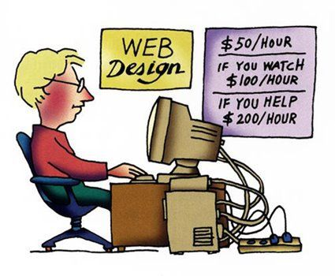

Последние новости веб разработки
-
В Chrome 76 появилось много нового: prefers-color-scheme, кнопка установки PWA на десктопе, Promise.allSettled, новые методы чтения Blob, картинки в Clipboard API.
-
Facebook выпустила Hermes — новый JavaScript-движок с открытым исходным кодом. С его помощью можно значительно сократить время запуска Android-приложения, размер APK-файла и объём потребляемой оперативной памяти.
-
CSS-модули позволяют импортировать стили для компонента из внешнего файла вместо использования JavaScript. Chrome планирует внедрить их поддержку.
Мой GitHub профиль